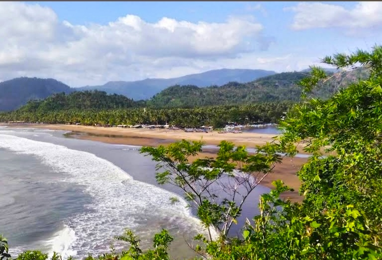
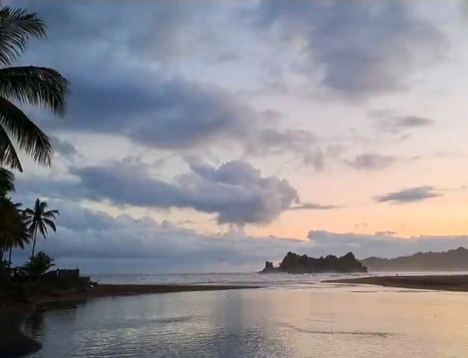

Pantai Konang
Keindahan pantai alami dengan ombak besar dan panorama matahari terbenam di Trenggalek.


Deskripsi
Pantai Konang terletak di Desa Nglebeng, Kecamatan Panggul, Kabupaten Trenggalek. Pantai ini dikenal dengan ombaknya yang besar dan cocok untuk kegiatan memancing serta berselancar. Keindahan pasir hitam dan panorama matahari terbenam menjadikan Pantai Konang sebagai salah satu destinasi favorit bagi wisatawan yang mencari suasana alami dan tenang di pesisir selatan Jawa Timur.
Jam Buka
Setiap Hari
06.00 – 18.00 WIB
Harga Tiket Masuk
- Dewasa: Rp5.000
- Anak-anak: Rp3.000
- Parkir: Rp3.000 (motor), Rp5.000 (mobil)
🌴 Aktivitas Menarik
- Berselancar & memancing: Ombak besar menjadikan pantai ini tempat favorit bagi pemancing dan peselancar lokal.
- Menikmati sunset: Panorama matahari terbenam di Pantai Konang sangat menawan untuk dinikmati di sore hari.
- Berjalan di tepi pantai: Pasir hitam yang lembut memberikan sensasi menenangkan saat berjalan kaki di sepanjang bibir pantai.
- Berfoto: Spot alami dengan latar ombak besar dan perbukitan di kejauhan.
🏖️ Fasilitas
- Area parkir: tersedia untuk motor dan mobil pengunjung.
- Warung makan: menyediakan makanan laut segar khas nelayan lokal.
- Gazebo sederhana: tempat bersantai sambil menikmati pemandangan laut.
- Toilet umum: tersedia di dekat area parkir dan warung.
Lokasi
Pantai Konang terletak di Desa Nglebeng, Kecamatan Panggul, sekitar 50 km dari pusat kota Trenggalek. Akses menuju pantai cukup baik dan dapat ditempuh dengan kendaraan pribadi.